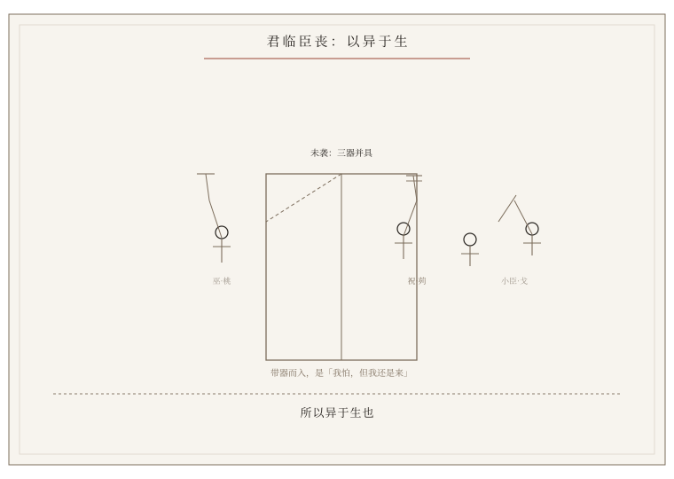

檀弓下 · 四·三十三 · 第 358 课
君临臣丧，以巫祝桃茢执戈，恶之也，所以异于生也。
说什么事：君往吊臣之丧，要带上巫、祝，执桃枝、执笤帚、执戈，因为厌恶那凶邪之气；这一套排场，正是把「已死」与「还在」分开的地方。
落在哪一层：以「异」量礼。论礼对死亡的第一个动作不是哀，是「承认他不在了」。
为何编在此位：上节论祔之早晚，此节转论临丧之仪。由「神之之时」到「待之之形」。
【经】君臨臣喪，以巫祝桃茢執戈，惡之也，所以異於生也。
【注】為有凶邪之氣在側。君聞大夫之喪，去樂卒事而往，未襲也。其已襲，則止巫，去桃茢。桃，鬼所惡。茢，萑苕，可掃不祥。
【疏】此一节论君临臣丧之礼。「君」谓天子，臣丧未袭之前，往临吊，则以巫执桃、祝执茢，又使小臣执戈。所以然者，恶其凶邪之气。必恶之者，所以异于生人也。若往临生者，但有执戈，无巫祝执桃茢之事；今有巫祝，故云「异于生」也。／「君闻大夫之丧，去乐卒事」者，昭十五年《公羊传》文。言「而往，未袭也」，是郑意所加之言也。／云「已袭，则止巫，去桃茢」者，「袭」谓死之明日，则止巫门外，去桃茢，祝代巫而入，又小臣执戈。郑知然者，案《丧大记》大夫之丧，将大敛，君往，巫止于门外，祝先入。又《士丧礼》大敛而往，「巫止于庙门外，祝代之。小臣二人执戈先，二人后」。／此经所云，谓天子礼，故郑注《士丧礼》引《檀弓》云：「君临臣丧，以巫祝桃茢执戈以恶之，所以异於生也，皆天子礼也。」诸侯临臣之丧，则使祝代巫，执茢居前，下天子也。
临 君亲往吊，非遣使。
巫 行厌禳之事者。
祝 丧祭主赞辞者。
桃 桃枝。注「桃，鬼所恶」。
茢 萑苕，即芦荻穗所作之笤帚。注「可扫不祥」。
戈 兵器，此以卫。
恶之 恶其凶邪之气，非恶其人。
异于生 与「待生人」不同。此四字是全节之眼。
袭 为尸加衣，在死之明日。
君往吊臣之丧，带上巫、祝，执桃枝、执笤帚、执戈，是因为厌恶那凶邪之气；这一套，就是与对待生人不同的地方。
此章记一套「带着东西进门」的仪。
三样执物，两个时辰，一种态度：恶之。
而「所以异于生也」一句，把整套仪节的意义一句话说完：礼对死者的第一个动作，是承认他不再是生人。
第一层 三器各有所司 桃，鬼所恶；茢，可扫不祥；戈，卫。
三者不是法器，是「界」：桃以隔，茢以扫，戈以守。合起来是一道门里的三道防线。
古人不讳言「恶」。他们承认尸体可怖、凶邪在侧，然后以礼把这份恶安置好，而不是把它说成没有。
第二层 恶之者，敬之也 若真轻贱死者，则不必费此一周折。
正因恶其气而又不肯不临，才要带三器。带器而入，是「我怕，但我还是来」的礼制化。
今人吊丧，心里多有一层避讳，而口头不许说。古人把这层避讳做成仪节，于是避讳也成了敬意。
第三层 未袭与已袭：礼随时间撤防 注云：未袭则巫祝桃茢俱在；已袭（死之明日）则止巫、去桃茢，祝代巫而入，小臣执戈。
同一件事，隔一夜就减配。减的理由不是不怕了，是「形已安，气已定」。
礼之加减，皆有其时。同一位君，昨日带三器，今日只带戈——不是礼薄了，是礼准了。
第四层 天子与诸侯之差 天子未袭前巫祝桃茢戈三者并具；诸侯则巫止门外、祝执茢、小臣执戈，「下天子也」。
一国之君尚且要「下」一位天子，此见礼之等级不因情而废。
第五层 今日之用：面对死亡的「仪式性防护」 今人进病房、进灵堂，常有不知所措之感；洗手、换衣、点香、鞠躬，其实都是现代版的桃茢戈。
这些动作的意义不在驱邪，在于：它替人做完了「我知道这里不一样」这句话。
若把这些都省掉，人便要在毫无准备的情况下直面死亡，往往不是更勇敢，是更狼狈。
与今日何干 凡涉死亡之事，不必讳言「怕」。把怕做成一个动作，怕就有了位置；怕有了位置，人才能进场。
| 左 | 右 |
|---|---|
| 临 | 君亲往吊 |
| 巫 | 执桃 |
| 祝 | 执茢 |
| 小臣 | 执戈 |
| 桃 | 鬼所恶 |
| 茢 | 扫不祥 |
| 戈 | 卫 |
| 未袭 | 三器并具 |
| 已袭 | 止巫，去桃茢 |
画一座丧居之门，视点正对门口，门为两扇，一扇半开。门内偏右立一人形（只以简笔轮廓示之，不画五官），手执一柄长笤帚；门外偏左立另一人形，作停步之状，手中执一枝带叶的桃枝。门内更深处，画两名执戈的小人形，一前一后。门楣上方不题字。不画连线。赭色只用在门内那把笤帚的柄上。
